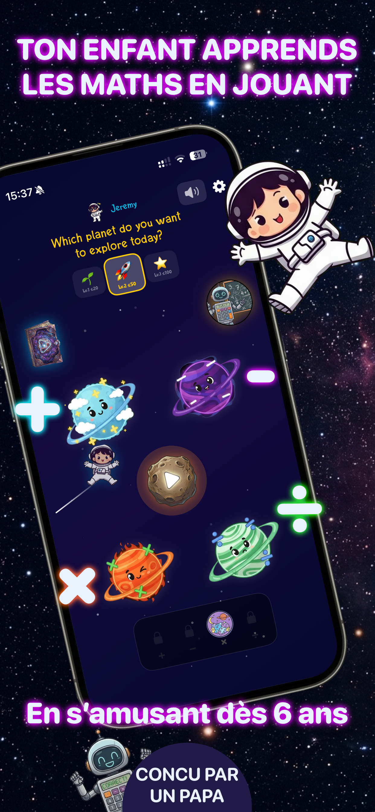
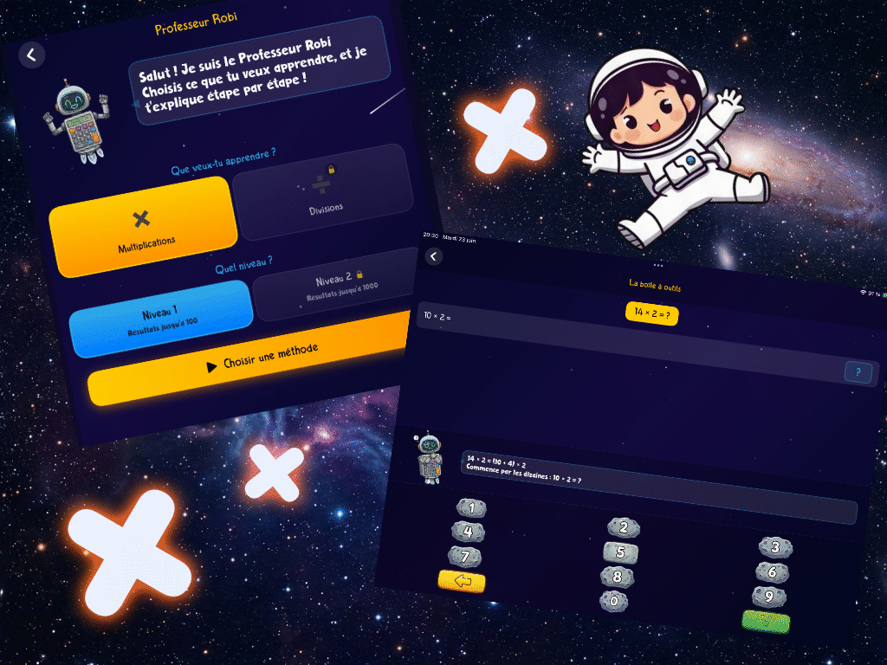
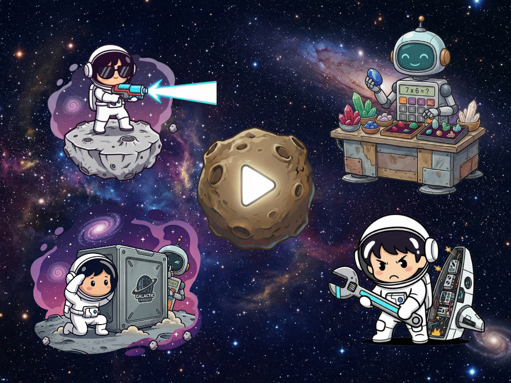
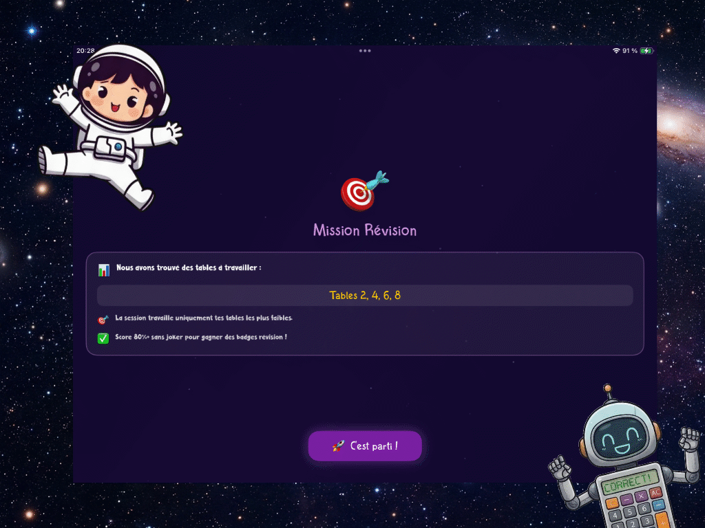
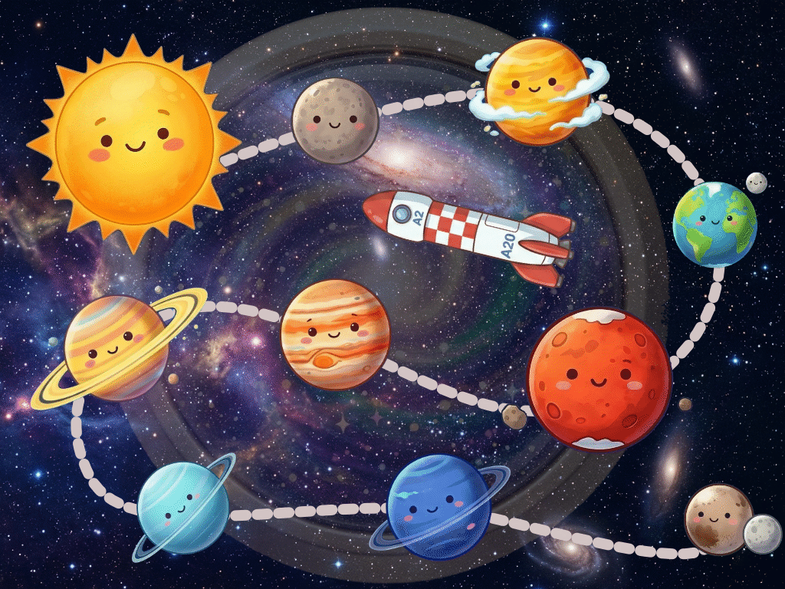

Application de calcul mental pour enfants dès 6 ans
Dès 6 ans
Sans publicité
Sans abonnement
iOS et Android





AstroCalcul transforme les exercices de maths en aventure spatiale. L'enfant s'entraîne aux additions, soustractions, tables de multiplication et divisions, progresse à son rythme et gagne des récompenses en explorant la galaxie. Sans publicité, sans abonnement, conçue par un papa développeur.
Ce que fait votre enfant dans l'application
Les 4 opérations
Additions, soustractions, tables de multiplication et divisions, par niveaux progressifs qui s'adaptent à son rythme.
Robi, le professeur
Robi explique les calculs étape par étape, avec des méthodes visuelles claires. Avec « Explique-moi mon calcul » (Premium), il aide l'enfant sur le calcul précis où il bloque.
Révision intelligente
L'application repère les erreurs de l'enfant et lui propose des révisions ciblées pour progresser.
5 mini-jeux
En s'entraînant, l'enfant gagne des AstroPièces pour débloquer 5 mini-jeux : Astro Target, Répare la fusée, Cache-cache avec Robi, Reconstitue le calcul et Le Marché Spatial.
Série quotidienne
Une flamme qui grandit à chaque jour de connexion, des avatars bonus à débloquer, et une série cassée récupérable avec des AstroPièces.
Exploration de la galaxie
Un voyage du Soleil jusqu'à Pluton, puis vers les lunes du système solaire, avec un fait à apprendre à chaque étape.
Pour les parents
- Sans publicité et sans suivi de l'activité de votre enfant.
- Sans abonnement : l'essentiel est gratuit, le Premium est un achat unique à vie.
- Un tableau de bord pour suivre les progrès de l'enfant.
- 3 à 5 minutes par jour suffisent, avec un rappel quotidien configurable.
- Les progrès peuvent être synchronisés entre vos appareils, uniquement pour vous.
Gratuit ou Premium ?
L'essentiel est gratuit : additions, soustractions et tables de multiplication, avec un profil enfant. Le Premium, en achat unique à vie, débloque les profils multiples (jusqu'à 4 enfants), des mini-jeux supplémentaires, les divisions, le mode avancé et « Explique-moi mon calcul ».
À quel âge utiliser l'application ?
AstroCalcul s'adresse aux enfants dès 6 ans. Les niveaux progressifs vont des premières additions aux tables complètes et aux divisions. Pour savoir quoi travailler selon l'âge, lisez le calcul mental selon l'âge, comment apprendre les tables de multiplication ou la table de 7. Pour s'exercer sur papier, il y a aussi nos fiches à imprimer.
Questions fréquentes
À partir de quel âge peut-on utiliser AstroCalcul ?
AstroCalcul est conçue pour les enfants dès 6 ans, avec des niveaux progressifs qui s'adaptent au rythme de chacun.
L'application est-elle gratuite ?
Oui, l'essentiel est gratuit : additions, soustractions et tables de multiplication. Une option Premium, en achat unique à vie et sans abonnement, débloque des fonctionnalités avancées.
Y a-t-il de la publicité ?
Non. AstroCalcul ne contient aucune publicité et aucun suivi de l'activité de votre enfant.
Sur quels appareils est-elle disponible ?
Sur iOS via l'App Store et sur Android via Google Play.
Combien de temps par jour faut-il s'entraîner ?
Mieux vaut 3 à 5 minutes par jour, régulièrement, qu'une longue séance de temps en temps.
Convient-elle à un enfant en difficulté en maths ?
Oui. La progression par petits paliers, la révision qui cible les erreurs et le côté jeu aident l'enfant à reprendre confiance, à son rythme.
AstroCalcul turns math exercises into a space adventure. Children practice addition, subtraction, multiplication tables and division, progress at their own pace and earn rewards while exploring the galaxy. No ads, no subscription, built by a developer dad.
What your child does in the app
The 4 operations
Addition, subtraction, multiplication tables and division, in progressive levels that adapt to the child's pace.
Robi, the teacher
Robi explains calculations step by step, with clear visual methods. With "Explain my calculation" (Premium), he helps the child with the exact calculation they are stuck on.
Smart review
The app spots the child's mistakes and offers targeted review to help them improve.
5 mini-games
By practicing, the child earns AstroCoins to unlock 5 mini-games: Astro Target, Fix the Rocket, Hide-and-Seek with Robi, Rebuild the Equation and The Space Market.
Daily streak
A flame that grows with every day of play, bonus avatars to unlock, and a broken streak that can be recovered with AstroCoins.
Exploring the galaxy
A journey from the Sun to Pluto, then on to the moons of the solar system, with a fact to learn at every stop.
For parents
- No ads and no tracking of your child's activity.
- No subscription: the essentials are free, Premium is a one-time lifetime purchase.
- A dashboard to follow your child's progress.
- 3 to 5 minutes a day is enough, with a configurable daily reminder.
- Progress can be synced between your devices, for you only.
Free or Premium?
The essentials are free: addition, subtraction and multiplication tables, with one child profile. Premium, a one-time lifetime purchase, unlocks multiple profiles (up to 4 children), extra mini-games, division, the advanced mode and "Explain my calculation".
What age is the app for?
AstroCalcul is for children aged 6 and up. The progressive levels go from first additions to full multiplication tables and division. To see what to work on at each age, read mental math by age, how to learn multiplication tables or the 7 times table. For paper practice, there are also our printable sheets.
Frequently asked questions
What age can children start using AstroCalcul?
AstroCalcul is designed for children aged 6 and up, with progressive levels that adapt to each child's pace.
Is the app free?
Yes, the essentials are free: addition, subtraction and multiplication tables. A Premium option, as a one-time lifetime purchase with no subscription, unlocks advanced features.
Are there ads?
No. AstroCalcul contains no ads and no tracking of your child's activity.
Which devices is it available on?
On iOS through the App Store and on Android through Google Play.
How long should my child practice each day?
3 to 5 minutes a day, regularly, works better than one long session once in a while.
Is it suitable for a child who struggles with math?
Yes. Small steps, review that targets mistakes and the game format help the child regain confidence at their own pace.
AstroCalcul verandert rekenoefeningen in een ruimte-avontuur. Uw kind oefent optellen, aftrekken, tafels van vermenigvuldiging en delen, gaat vooruit in eigen tempo en verdient beloningen terwijl het de melkweg verkent. Zonder reclame, zonder abonnement, gemaakt door een developer-papa.
Wat uw kind in de app doet
De 4 bewerkingen
Optellen, aftrekken, tafels van vermenigvuldiging en delen, in progressieve niveaus die zich aanpassen aan het tempo van uw kind.
Robi, de leraar
Robi legt de berekeningen stap voor stap uit, met duidelijke visuele methodes. Met "Leg mijn berekening uit" (Premium) helpt hij ook uw kind bij de exacte som waar het vastloopt.
Slim herhalen
De app merkt de fouten van uw kind op en stelt gerichte herhalingen voor om vooruit te gaan.
5 minigames
Door te oefenen verdient uw kind AstroMunten om 5 minigames te ontgrendelen: Astro Target, Repareer de raket, Verstoppertje met Robi, Herbouw de som en De Ruimtemarkt.
Dagelijkse reeks
Een vlam die elke dag groeit, bonusavatars om te ontgrendelen en een verbroken reeks die hersteld kan worden met AstroMunten.
De melkweg verkennen
Een reis van de Zon naar Pluto en daarna naar de manen van het zonnestelsel, met bij elke stop iets nieuws om te leren.
Voor ouders
- Zonder reclame en zonder opvolging van de activiteit van uw kind.
- Zonder abonnement: de basis is gratis, Premium is een eenmalige aankoop voor het leven.
- Een dashboard om de vooruitgang van uw kind te volgen.
- 3 tot 5 minuten per dag is genoeg, met een instelbare dagelijkse herinnering.
- De vooruitgang kan tussen uw toestellen worden gesynchroniseerd, enkel voor u.
Gratis of Premium?
De basis is gratis: optellen, aftrekken en tafels van vermenigvuldiging, met één kinderprofiel. Premium, een eenmalige aankoop voor het leven, ontgrendelt meerdere profielen (tot 4 kinderen), extra minigames, delen, de gevorderde modus en "Leg mijn berekening uit".
Voor welke leeftijd is de app?
AstroCalcul is voor kinderen vanaf 6 jaar. De progressieve niveaus gaan van de eerste optellingen tot de volledige tafels en delen. Wilt u weten wat u op welke leeftijd kunt oefenen, lees dan hoofdrekenen per leeftijd, tafels van vermenigvuldiging leren of de tafel van 7. Om op papier te oefenen zijn er ook onze werkbladen om af te drukken.
Veelgestelde vragen
Vanaf welke leeftijd kan een kind AstroCalcul gebruiken?
AstroCalcul is ontworpen voor kinderen vanaf 6 jaar, met progressieve niveaus die zich aanpassen aan het tempo van elk kind.
Is de app gratis?
Ja, de basis is gratis: optellen, aftrekken en tafels van vermenigvuldiging. Een Premium-optie, als eenmalige aankoop voor het leven en zonder abonnement, ontgrendelt geavanceerde functies.
Is er reclame?
Nee. AstroCalcul bevat geen reclame en volgt de activiteit van uw kind niet op.
Op welke toestellen is ze beschikbaar?
Op iOS via de App Store en op Android via Google Play.
Hoelang per dag moet mijn kind oefenen?
Beter 3 tot 5 minuten per dag, regelmatig, dan af en toe één lange sessie.
Is ze geschikt voor een kind dat moeite heeft met rekenen?
Ja. Kleine stapjes, herhaling die de fouten aanpakt en het spelelement helpen uw kind om vertrouwen terug te winnen, in eigen tempo.
Prêt à commencer l'aventure ?
Téléchargez AstroCalcul et transformez les devoirs de maths en un jeu d'exploration.